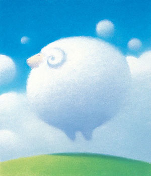
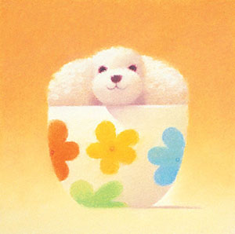

I go to places that captivate and intrigue me. I am interested in what humans do. I seek to capture people, traditions, and locales that first and foremost are of personal interest. I immerse myself with information on the places prior to leaving, but I try to avoid firm, preconceived ideas. I strive for both calculation and discovery in my work, keeping my mind open for surprises. At times, I envision images I would like to capture, but when I actually look through the viewfinder, my mind goes blank and I photograph whatever catches my eye. Photographs I return with are usually different from my original concepts. My photographs reflect both genuine interest in my subject as well as a respect for the element of serendipity, while other times I seek pure beauty. The pure enjoyment of this process drives and inspires me. I believe there is a thread that connects all of my work -- my personal vision of the world as a whole. I make every effort to be a faithful visual recorder of the world around me, a world in flux that, at very least in my mind, deserves preservation.
Hiroshi Watanabe was born in Sapporo, Japan. He graduated from Department of Photography, College of Art, at Nihon University in 1975. He moved to Los Angeles after graduation and became involved in the production of TV commercials, eventually working as a producer. He later established his own production company and produced numerous commercials. He received an MBA degree from UCLA Business School in 1993.
In October 1975, he married animator Akemi Ota, with whom he had two sons, Gorō and Keisuke. His dedication to his work has often been reported to have impacted negatively on his relationship with Gorō. He has expressed he does not wish to create a dynasty of animators and his son has to create a name for himself.
In 1985 his passion for illustration rekindled, and since then he has traveled worldwide extensively, illustrating what he finds intriguing at that moment and place. In 2000 he closed the production company in order to devote himself entirely to the art and became a full time illustrator.
 Watanabe's blue hues are extraordinary. "Like a blue sky that goes on forever and an unlimited expanse of blue ocean, blue holds enormous power." Pastels are not just tools for him, but a profound material with which to describe his feelings on paper.
His characters are adored by people because of their warmth and universality that his audiences relate to easily. From the world of Advertising, Magazines, CD covers, to children's illustrated books, Mr. Watanabe's works straddle genres. He is a member of the Society of Illustrators and the Tokyo Illustrators Society.
Watanabe has won awards at The New York Art Directors Club (NY ADC '88, '91, '92), entering Annual Exhibition of The Society of Illustrators ('96, '05), Nikkei Advertisement Selection Prize ('94), Industrial Advertising Association Japan, Japan Package Association, Illustration The CHOICE, and many more. His solo shows have been scheduled throughout Japan and China (Shanghai) regularly since 2006.
 Watanabe's works are characterized by the recurrence of progressive themes, such as environmentalism, pacifism, feminism, and the absence of villains. His illustrations are also frequently concerned with childhood transition and a marked preoccupation with flight.
Among Watanabe's earliest influences are the illustrated stories he read in boys' magazines and manga Tankōbon during his childhood. He has indicated that he does not only like their subject matter and their presentation of the artwork but also that he came to appreciate the pacing of their adventures, allowing for a thorough immersion in the stories they created because the slow production rate necessitated re-reading the same work several times. As a result he prefers monthly serialization to the weekly format for his own works.
In an interview broadcast on BBC Choice on 2002-06-10, Watanabe cited the British authors Eleanor Farjeon, Rosemary Sutcliff, and Philippa Pearce as influences. The filmmaker has also publicly expressed fondness for Roald Dahl's stories about pilots and airplanes; the image in Porco Rosso of a cloud of dead pilots was inspired by Dahl's They Shall Not Grow Old.
Watanabe has said he was inspired to become an illustrator by The Tale of the White Serpent, considered the first modern anime, in 1958. He has also said that The Snow Queen, a Soviet animated film, was one of his earliest inspirations, and that it motivated him to stay in illustration.
Hiroshi has won awards at The New York Art Directors Club (NY ADC '88, '91, '92), entering Annual Exhibition of The Society of Illustrators ('96, '05), Nikkei Advertisement Selection Prize ('94), Industrial Advertising Association Japan, Japan Package Association, Illustration The CHOICE, and many more. His solo exhibitions have been scheduled throughout Japan and China regularly since 2006.